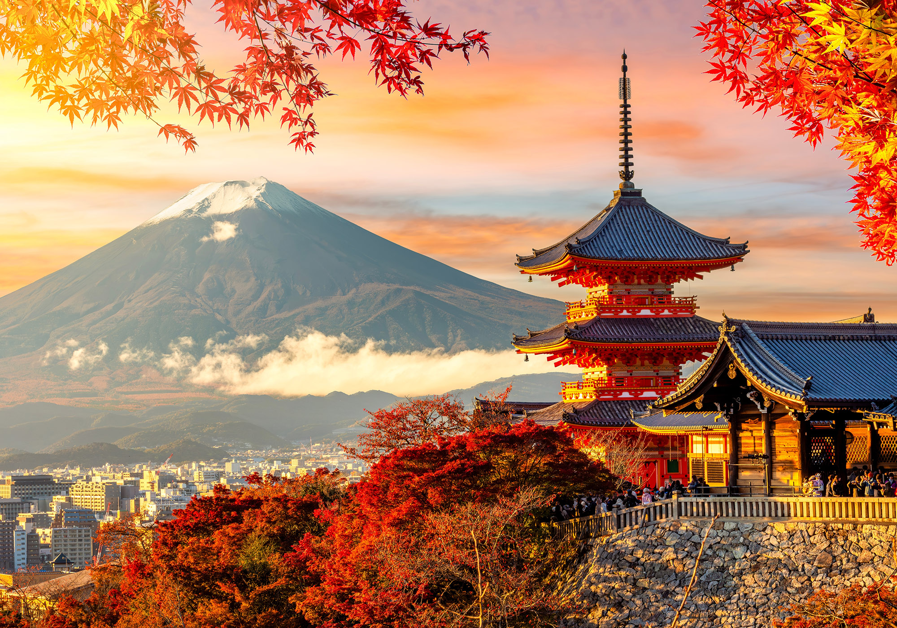

Kyoto and Japan together represent a fascinating blend of tradition and modernity. Kyoto, once the imperial capital, is renowned for its ancient temples, serene gardens, and traditional tea houses that preserve centuries-old culture. Walking through districts like Gion, visitors encounter geisha traditions and wooden machiya houses that echo the past. Japan as a whole is a nation of contrasts, where futuristic cities like Tokyo coexist with historic shrines and castles. The country is celebrated for its technological innovation, from robotics to bullet trains, while still deeply rooted in rituals such as tea ceremonies and seasonal festivals. Japanese cuisine, including sushi, ramen, and matcha, has become globally beloved, reflecting both simplicity and artistry. Nature also plays a central role, with cherry blossoms in spring and Mount Fuji standing as iconic symbols. Kyoto exemplifies Japan’s spiritual heart, while Tokyo showcases its modern dynamism. Together, they highlight a society that balances progress with tradition. This harmony makes Japan not only a cultural treasure but also a global leader in innovation and lifestyle.
